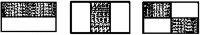
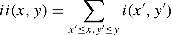
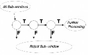
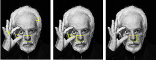
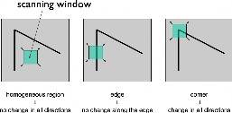
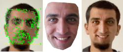

Bayat, Samet1
Electrical-Electronics Engineering, Baskent University Turkey
Abstract— In this project work, face/feature detection, feature tracking and face swap applications will be handled and evaluated with Viola Jones, KLT and MPB algorithms. The work includes three different applications: 'Real Time Face Tracking', 'Image Editing/Blending' and 'Video Editing/Blending'. The open-source content of Mahmoud Afifi (York University) is used as the video processing dataset and MATLAB code guide. The aim is to examine the algorithms in detail, how MATLAB used it and to determine the proportionality of the application-theoretical knowledge common shares.
Keywords— Viola Jones, KLT, MPB, Face Swap, MATLAB.
Introduction
‘Digital masks/filters’ became vouge of our virtual world and even affect in our attitudes in non-virtual areas. [1,2] In my work, I examined the reflection of this socio-cultural fact and trend on the computer age with some algorithms and case studies as image/video face swap and filtering applications which was made using Viola Jones Algorithm, KLT (Kanade–Lucas–Tomasi feature tracker) and MPB (Modified Poisson blending technique). Face manipulation concept is so wide, in literature there are many different approaches to achieve this problem. In common, the blending process progresses with the mask which taken from source applies to target’s face. Unlike Face2Face (3D masks), in our concept ‘Face Swap’, we use 2-dimensional masks (projections). On the other hand, deepfake refers to more complex applications. In deepfake approaches, generally GAN or Autoencoder-like deep learning applications are used. [3-5]
Behind the Scenes: Algorithms & Math Behind
Applications
Viola Jones Algorithm (for Face & Feature Detection)
Despite its introduction at the beginning of the millennium, Viola Jones Algorithm is still one of the most popular face detection algorithms. It classifies values of images based on the simple ‘features’ rather than pixels. The main reason to do that is feature-based system operates much faster than a pixel- based system. At this point Haar basis functions and Integral Image help us to detect face(s) and simple features, for this process we use three kinds of Haar-like features as Edge-like, line-like and four-rectangle(diagonal) which can be seen, respectively, in Figure 1. [6,7]

Figure 1. Haar-like features.
From left: Line-like, edge-like, diagonal features.
The process that makes this face recognition algorithm faster than others is Integral Image. It allows to compute related part of image much faster with less variables compared to pixel-to-pixel computation. A simple sum operation, where ii(x, y) is the integral image and i(x, y) is the original image, can be used for this process: [6]

On MATLAB side, the most proper and fastest solution for this particular case is vision.CascadeObjectDetector(). This 1 line of code not just provides the integral image, it nearly includes all the methods discussed above and will be discuss below. (Haar-basis functions, cascading etc.)[8]
Other important algorithm for more accurate results is Adaptive Boosting (AdaBoost) Algorithm. It refers the process which combines several weak learners (for our case, weak learner refers to each facial organs: nose, left eye, mouth, etc.) into a strong learner called boosting. (This process could be considered as complementary of Cascading) Key point here is training period lasts sequentially. [9]
After we found the rough position of face, cascade filter (it could be considered as binary classifier) searches a particular niche feature (an eye, ear, mouth, etc.) During search, if it detects a particular feature (ex. Right eye) it continues to search another feature. (ex. nose) If it gets always positive responses (finds desired features): finally, it returns the ‘ROI’ (Region of Interest) of face with locations of features. If it cannot find desired feature: it stops the process (Reduces the amount of computation time spent on false, windows) retries the process on different area of image. [6]

Figure 2. Schematic depiction of the detection cascade.
During trials, machine found 175 out of 197 potential heads, and 9 non-heads were classified as head. (Since we work with single-head models for face swapping applications, the margin of error for multi-head models is negligible.) Accuracy = 0.8495145631 ≈ 84.95%. One of the possibilities behind that failure might be the default ‘threshold’ value. In the work below, we can observe how threshold effects the result:

Figure 3. From left: (a) Threshold:2, (b) Threshold:12,
(c) Threshold:22, (Face model: Alejandro Jodorovsky)
Finally, if we examine the average behavior of algorithm results shows that, when the non-face area decreases, face detection lasts quicker:
0.164459 (for 1 face) = 0.164459 sec / face
0.423240 (for 29 face and 6 errors) = 0.014594 sec / face
1.207437 (for 133 face and 2 errors) = 0.009078 sec / face.
Kanade–Lucas–Tomasi (KLT) Feature Tracker
KLT Algorithm is capable of track objects with many methods, varieties, different motions, for face swap application we need simply ‘single object tracking’ concept which can be obtained with ‘Harris Corners.’[10]
Harris corners allows us to detect corners in image. Harris detector evaluates eigenvalues to find the 'ROI'. The process simply explained with figures below: [11]

Figure 4. Harris Corner concept.
The main difference between Harris detector-based feature tracking and ours (KLT Shi-Thomasi, 1994) is that our version uses just edges as good-features to track face. It obviously increases the error ratio but also speed up process significantly. Since we use these features in video processing, keeping the number of edges optimal will be much more efficient for the video editing process.
In MATLAB, ‘detectMinEigenFeatures’ finds the Harris corners from eigenvalues and uses ‘boundarybox’ (area separated from the rest of the image) for tracking and ‘vision. PointTracker’ tracks the related part frame by frame. [12]
Image Preprocessing (Image Alignment & Stabilization)
Image alignment is the procedure of the overlay of the images of same scene under various conditions, such as from various viewpoints, with different illumination, using a variety of the sensors, or at various times. Image alignment is transforming a source image to the coordinate system of the reference image besides image stabilization helps us to fix issues caused by blur (problems occur during exposure because of camera motion). [13]
Modified Poisson Blending Tecnique (MPB)
The most relevant part of this work with image/video editing is definitely the MPB phase. MPB also called as gradient image editing. Masking application which mentioned at the very beginning of the introduction takes its final shape with this technique. It primarily prevents the bleeding problems in operation. Key factor here is the source and target ROI have to be well aligned. Deviation in alignment process may cause crucial errors at this part.
Gradient images and the Laplace filter in the blending phase allow the process to be both quick and consistent. The gradient of an image measures how it is changing. It provides two pieces of information. The magnitude of the gradient tells us how quickly the image is changing, while the direction of the gradient tells us about the direction in which the image is changing most rapidly.
Dataset
At the very beginning of coding, for feature training, it tried to evaluate feature training stage with external dataset. In my trials, I tried to use ‘MS Celeb 1M’ [15] dataset which contains 8,456,240 images yet due to some restrictions of operating system and graphics card the process could not be completed with desired conditions. Therefore, I used ‘Transfer Learning’ concept for feature detection phase, from OpenCV libraries, ‘haarcascade_frontalface_alt.xml’ file transferred which includes feature detection information about frontal face. [14,15] Here machine evaluates that information with using Haar-like Features and cascading. In addition to this, I also use built in MATLAB Haar-Cascade module called ‘FrontalFaceCART’.
For video-face swap, there are 3 source and target frame sets exist in original dataset. In all samples which are stabilized and aligned, target donors face the lens at a 90- degree angle. We observe that oscillation and zoom in-out are done without disturbing the angle between their faces and the lens (without turning their heads). As target donor, many trials made with various videos, yet results were unexpected. Attempts with wrong results showed at the end of this part.
Unlike image editing, variables change constantly in video editing. (Face/feature location, lighting, rotation, etc.) Before the editing process, we know from previous works that aligning and stabilization has critical importance for face swap application. Therefore, both target and source images need preprocessing. The very first step is converting videos to frames. A simple ffmpeg terminal command used for converting. Later, thanks for M. Afifi’s stabilization tool, 4th
target’s stabilized video (where the author is the target donor) obtained about in 5 mins.
Image & Video Face Swap Applications In MATLAB
Real-time Face Detection and Tracking
Here an environment with MATLAB built-in functions and transfer learning concept created. (Instead of training, I used existed data that includes needed information) In a given period, machine constantly takes pictures, converts into grayscale, evaluates the face and feature locations and projects to user.
Main problems detected: In dim light, when shooting from a side profile, when accessories are attached (eg eyeglasses), the machine has occasionally calculated incorrect outputs.
Poisson Image Editing (Face & Object Swap / Image)
Poisson Image Editing (which includes Poisson distribution, Laplace filtering stages) was the second application. Here user crops (creates a mask) the related part of image. (It is not have to be face) The main problem here was scaling issues. The issue solved with ‘imresize’ command and a short trial-error period but still for further implementations to get proper solutions, program needs much efficient way to automate the aligning process. (imresize function and intermediate steps effects the dimensions and resolutions of output)
Figure 5. From left: (a) source, (b) target, (c) mask, (d) mask placed in
ROI by user (e) output.
Source Image: The Office, 2005.
Target Image: The Wolf of Wall Street, 2013.
Video Editing / Face Swap Application
The combination of Real-time & Image Editing applications became an automated video face swap technique here. Steps used in application first imported here. Primarily, image converted to grayscale for faster detection. Additionally, for more advanced feature extraction, haarcascade_frontalface_alt.xml file from OpenCV is used as transfer learning method.
MPB function which developed from application Image Editing, blends target and source with using Poisson distribution and Laplace filters as these equations indicated. After computation, function saves blended frame to output folder. Unlike application ii, here since we work with aligned and stabilized dataset, we do not need to rearrange target or source frame. When KLT is added here, the blending process will be applied to the 'ROI' in a fully automatic manner during the process.
Again, like in real-time tracking, machine creates edge points with using eigenvalues and calculates the new head position based on the previous frame. During operations, masks and the target frame are constantly refreshed until it
reaches the target number of frames. The process can be observed with the simple user interface that pops-up when the code executed.

Figure 6. From left: (a) target, (b) source mask, (c) output.
Exemplary Applications
High-Resolution Neural Face Swapping for Visual Effects
Unlike our mid-resolution examples, in 2020, Disney released an Autoencoder & GAN-based method that allows neural face swap for high-resolution videos. (Let's note that, for a single relatively high-resolution image in our custom trial, the process took 18 minutes.) [7]
Synthetic Film Dubbing
Nowadays, in the age of video consumption, many people prefer to watch dubbed content rather than subtitles. Companies like 'Flawless AI', which thinks that following the subtitles disconnects the viewer from the story, aims to overcome this situation by making lip sync based visual translation.
Deepfake Anchor
Channel owners are looking for low-budget solutions these days when costs are increasing. 'Deepfake anchors' seems to be the new trend for news channels in the field of video processing, where artificial intelligence is in demand. The process, on the other hand, is similar to the stages mentioned in our study, but the masking process is more detailed and audio processing is also included in the process.
Ethical Issues
The vast majority of deepfake applications are used for entertainment (as individual and as industrial) and education, but in some cases, we see this application used maliciously. In the video published recently, the 'fake' president who called for his army to 'surrender' during the Russia-Ukraine war, and Obama, who was also one of the bureaucratic donors, 'saying unspeakable words' are examples of these. For such applications of rapidly developing artificial intelligence, states should keep sanctions tight. Also, some recent applications like FaceApp, ZAO, Reface.. violates personal data protection law yet due to delay of international laws, solving such situations requires a long time.
CONCLUSIONS
When we complete the applications, we see that some of the results developed as we wanted, others could not reach the desired situation. 'Alpha Composition - Transparency Issue', which is corrected for Image Editing, and our code that requires less trail -error is good for us. For video editing, semi
-automation was provided much faster even for the end user. The biggest success here is 'Tracking Optimization'. The object followed by random features selected from the first image can now be followed more stable with the help of 'Good Features'. At the beginning of the factors behind this success, the 'Transfer Learning' method is coming. Thanks to the feature information in the .xml file (which is our 'Viola- Jones Algorihtm'), we can detect a face by 84.95%.
On the other hand, some situations during the process did not result as desired. The dataset we used for 'Feature Training' has been subjected to GPU-operational system restrictions. Although improvements have been made for image editing, which we could perform manually, full automation could not be realized. (We still need to watch the Trial-Error for the target and resource aligning process. The results we improve with the 'Good Features to Track' approach are also subject to the Trial-Error process as for image editing. Our code, which is requested to work like an optimized program (can make face swap for each appropriate video) is not yet at this stage. (For this reason, for the appropriate results in video trials, the dataset used by Mahmoud Afifi was used.) For the result obtained with the video added to the existing Dataset (the face of the target author), appropriate results were obtained in only 9 seconds of 1 minute 33 seconds footage. In addition, MATLAB Android Toolbox allows us to mobilize our application, for further it can be adapted to the phone.
Acknowledgment
I would like to thank Begüm Cangöz, who laid the foundation for how I should look at algorithms and did not spare me her opinions, M. Afifi, who helped us learn by sharing the open-source code and dataset, and my mother, who has maintained her support and optimistic attitude from the beginning of my project, no matter how bad the obtained outputs were.
References
https://thesocialshepherd.com/blog/snapchat-statistics Accessed: Dec 18, 2022.
Habib A, Ali T, Nazir Z, Mahfooz A. Snapchat filters changing young women's attitudes. Ann Med Surg (Lond). 2022 Sep 17;82:104668. doi: 10.1016/j.amsu.2022.104668. PMID: 36268310; PMCID: PMC9577667.
Justus Thies, Michael Zollhöfer, Marc Stamminger, Christian Theobalt, and Matthias Nießner. 2018. Face2Face: real-time face capture and reenactment of RGB videos. Commun. ACM 62, 1 (January 2019), 96–104. https://doi.org/10.1145/3292039
Naruniec, J. & Helminger, L. & Schroers, C. & Weber, R.M.. (2020). High-Resolution Neural Face Swapping for Visual Effects. Computer Graphics Forum. 39. 173-184. 10.1111/cgf.14062.
Afifi, Mahmoud, et al. “Video Face Replacement System Using a Modified Poisson Blending Technique.” 2014 International Symposium on Intelligent Signal Processing and Communication Systems (ISPACS), IEEE, 2014, doi:10.1109/ispacs.2014.7024453.
Viola, P.; Jones, M. (2001). "Rapid object detection using a boosted cascade of simple features". Proceedings of the 2001 IEEE Computer Society Conference on Computer Vision and Pattern Recognition. CVPR 2001. IEEE Comput. Soc. 1.
C. Papageorgiou, M. Oren, and T. Poggio. A general framework for object detection. In International Conference on Computer Vision, 1998.
https://www.mathworks.com/help/vision/ref/vision.cascadeobjectdetec
tor-system-object.html Accessed: Nov 28, 2022.
Hands-On Machine Learning with Scikit-Learn, Keras, and TensorFlow: Concepts, Tools, and Techniques to Build Intelligent Systems by Aurelien Geron (pg.201-205)
https://www.crcv.ucf.edu/wp-content/uploads/2019/03/Lecture-10-
KLT.pdf Accessed: Nov 30, 2022.
Chris Harris and Mike Stephens (1988). "A Combined Corner and Edge Detector". Alvey Vision Conference. Vol. 15.
https://www.mathworks.com/help/vision/ref/detectmineigenfeatures.ht
ml Accessed: Dec 5, 2022.
Ghindawi, Ikhlas & Abdulateef, Sali & Dawood, Amaal & yousif, Intisar. (2020). Modified Alignment Technique Using Matched Important Features. International Journal of Engineering Research and Advanced Technology. 06. 01-06. 10.31695/IJERAT.2020.3592.
https://docs.opencv.org/3.4/db/d28/tutorial_cascade_classifier.html
Accessed: Dec 13, 2022.
https://github.com/opencv/opencv/tree/master/data/haarcascades
Accessed: Dec 13, 2022.